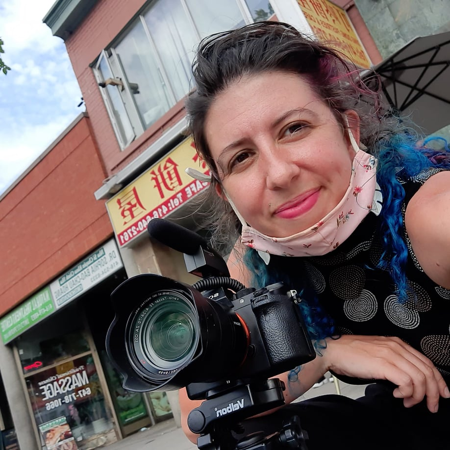

Land Air and Sea Digital (LASD) is a national collective of geographic information system and cartographic professionals.
Founded in 2021 through an initiative called "make a webpage, survey a tree," LASD has grown to become of of the most
effective and wide-reaching assessment agencies in the world! We provide long LASDing results for our clients and nature.
The LASD People on Earth
Meet the experts, scientists and leaders that make up our diverse team!

Christie Peacock
GIS analyst
Christie's work as a civil engineering focusing in stormwater management has given her a wealth of experience to draw upon for
construction monitoring, survey, design and infrastructure analysis. When not working for us, Christie is toodling with maps
of hiking trails.
Stephen VanDam
Web and Database Programmer
When it comes to problem solving in annoying lines of code, Stephen is our guy. Specializing in HTML, CSS, Javascript, JQuery
and SQL, Stephen is also comfortable with C# and Java, although he's not a coffee drinker. With a background as a civil engineering technician,
Stephen is also our surveying field-hand, familiar with the workings of construction sites and a knack for riverbed surveys. When he's not
repairing Amanda's CSS he can be found in his basement woodshop making sawdust.

Gabby Riefesel
Environmental Spatial Analyst
Gabby Riefesel is the environmental spatial analyst expert on our team here at Land, Air, Sea - Digital! They have an extensive background in
ecosystem modeling, and ensures our environmental assessments encompass the requirements of flora and fauna local to all our projects. They
have worked with Government, research institutes, ENGOs, and volunteer run organizations throughout their career, and carries an in-depth
knowledge of project requirements for these various organization types. Gabby completed Bachelors of Science in Biology at Memorial University
of Newfoundland and Labrador and a GIS: Applications Specialist Diploma from Fleming College. When not working, Gabby enjoys bike touring
around the island of Newfoundland.

Jon Marlo Delicano
Cad Mapping Specialist
Though a mechanical engineer in upbringing with a background in automotive manufacturing, Jon Marlo always held an enthusiasm for cartography
and mapmaking. Yearning for challenge himself in a different direction, he explored various career pursuits to align with his passions. Jon Marlo
eventually found himself here at LASD where he continues to place his passions in mapmaking whilst applying his learned technical skills towards the
GIS industry. Nowadays, he specializes in CAD mapping.

Amanda Hunter
Remote Sensing Specialist
Amanda Hunter has more than just her head in the clouds these days! Our UAV pilot and remote image & sensor analyst loves to send her robot
birds into the sky to measure and record a wide array of landscapes. Amanda had her humble beginnings as an internationally published fashion
photographer but when she nearly died of exposure she joined the LASD option available to her! With an advanced operations UAV certification
and over 5923 logged flights under her belt,she has the greatest passion for crea ting and then staring at images than anyone we’ve ever met.
Sean Skwirl
Mascott and pilot
Sean is the world's smallest and most skilled pilot, he is under 2.64 kilos and therefore can ride anything from a drone to a helicopter.
He looks down on everything from great heights, in the best possible way. He is quoted saying, "squirrels are very good at explaining things, because they give it to you in a nutshell."
On his spare time he can be found at the local pub arguing with folks on the correct spelling of his name.